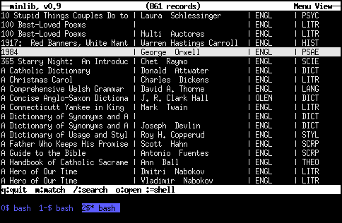
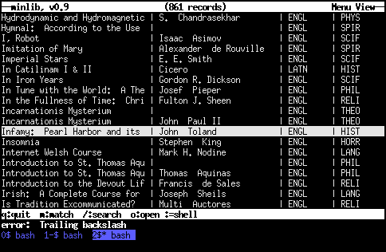
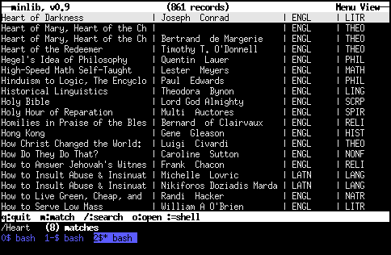
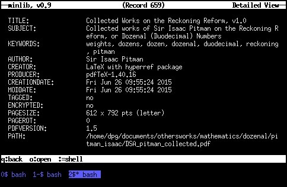
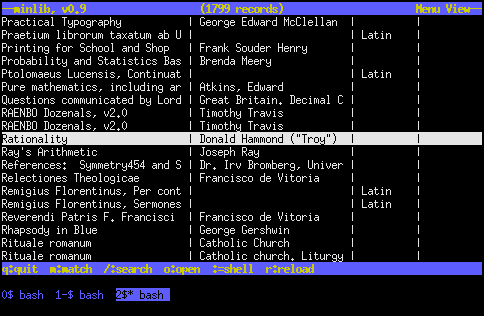

Minlib Tutorial
As with any piece of unfamiliar software, it takes some time to get used to minlib. However, despite its power as a library management program, it's pretty simple to operate, and it won't take very long to be using it with ease.
To get started, you'll need to have at your disposal a command line. While minlib doesn't require you to work with it on the command line (that's what its text user interface, or TUI, is for), the command line is the normal way to start it up. We will use
$>to show the command prompt, and the following line (if any) will be the output that minlib produces. You are supposed to type what appears on the line after the prompt.
Getting Started
To get started using minlib, you'll really only need one thing: a data file. This is the file that minlib uses to form its list of your library, making all the useful features of minlib possible. It's so important, in fact, that minlib is entirely useless without one, and if you don't provide it with one, minlib will simply let you know that it doesn't have anything to work with, and will quit:
$> minlib minlib: no input file specified
So you need to give minlib something to work with; you need to give it your data file. You can do this in one of two ways. Let's take a common use case: you're trying to convert your library over from calibre. Unlike calibre, minlib does not force you to store your files in a particular way; so converting your calibre use to minlib is a simple matter: use the "-a" option. Take note of whatever directory you told calibre to use for storing your books. Then enter the following:
$> minlib -a /your/book/directory > library_file metadata.db not a minlib format; skipping... Processing mybook.pdf... Processing mybook.epub... Processing mybook_1.html... Processing mybook_2.html... Processing mybook_3.html... ....And so on. Depending on the size of your library, this may take a while to run; but minlib will provide you plenty of output to let you know what it's doing. All of that feedback about what minlib is doing will be output to "stderr," so you'll be able to watch what minlib is doing; but the actual metadata from your files is written to "stdout," so once minlib is finished, you'll find your data file in "library_file.
If you open library_file, it will look something like this:
%% TITLE: Lawrence Lessig: - Free Culture - How Big Media Uses Technology and the Law to Lock Down Culture and Control Creativity SUBJECT: law KEYWORDS: law AUTHOR: LM-sisu-scribe CREATOR: LaTeX with hyperref package PRODUCER: xdvipdfmx (0.7.8) CREATIONDATE: Fri Mar 11 09:41:37 2011 TAGGED: no ENCRYPTED: no PAGESIZE: 612 x 792 pts (letter) PAGEROT: 0 PDFVERSION: 1.4 PATH: /your/book/directory/lessig_free_culture.pdf %% TITLE: Choregraphie, ou, L'art de décrire la dance, par caracteres, ... KEYWORDS: http://www.archive.org/details/choregraphieoula00feui AUTHOR: Feuillet, Raoul-Auger, 1659 or 60-1710 CREATOR: Digitized by the Internet Archive PRODUCER: Recoded by LuraDocument PDF v2.28 CREATIONDATE: Sat Mar 20 01:00:45 2010 MODDATE: Sat Mar 20 01:22:31 2010 TAGGED: no ENCRYPTED: no PAGESIZE: 350 x 498 pts PAGEROT: 0 PDFVERSION: 1.5 PATH: /your/book/directory/choregraphieoula00feui.pdf ....
Depicted above are two records, each of which lists the metadata for one book. All of this information, except the line labelled "PATH", comes directly from the files themselves; the PATH line is supplied by minlib. Of course, minlib will traverse the entire directory tree and do this for all the files in formats it recognizes; other files it will simply ignore.
Each record is separated from the ones above and below it by a line containing "%%"; even the first record must begin with this line, but the last record does not need to be followed by it. Each line consists of a field name, which is a series of all-caps (and optionally periods) closed by a colon, followed by either nothing or any amount of whitespace, followed by the field data, which is arbitrary information which consists of the rest of the line. The field data can be of any length; our second record shows an abnormally long title (beginning with "Choregraphie"), but the field data has no length limit at all.
In any case, now you have your data file (at least one; it's likely you'll wind up with several as time goes on, each containing different types of media; but you may choose to keep them all in one, if you wish); now try running:
$> minlib -f library_fileAnd we'll see what happens then in our next section.
Running Minlib
Having run the last-listed command above, minlib will start itself up and show you the listings of your library. By default, it looks something like this:
(We say "by default" because the colors and format are extremely customizable, about which we'll see more later. But the above is what minlib does unless you tell it to do otherwise.)
Let's look at that image above for a moment. The line at the very bottom, with blue text, is immaterial; it is simply a function of the author's totally unrelated configuration of GNU screen. But we can see several important parts of the screen that minlib presents to you above, each of which serves a different function.

The top bar provides you the name and version of the program; the total number of records that minlib currently has loaded; and identifies that you are in menu view (as opposed to detail view, which is reached by hitting "enter" on one of the menu options). The bottom bar lists your options for actions, and is relatively self-explanatory. Then there are the menu options, which is the list of records in your library; scroll up or down to see more. Finally, there is the cursor, which highlights the currently-selected item; in this case, Orwell's 1984.
Finally, there is the line just below the bottom bar, which prints messages for the user. Most of the time it will be empty; however, it will often contain important information for the user. We will call this the status line.
You can move around in menu view in the following ways:
- Scroll up and down: use either your up and down arrow keys, or use 'j' for down and 'k' for up.
- Page up and down: use the "Page Up" and "Page Down" keys to scroll up and down by a page at a time.
- Menu up and down: you can skip straight to the top or bottom of the menu view by using the "Home" and "End" keys on your keyboard.
- Match: you can do a quick and simple matching of records. In the default view, for example, you can find 1984 easily by simply typing 'm', then entering the first few characters in the title. There may be more than one match; if that's so, use 'p' to find the next match, or 'P' (capital 'p') to find the previous one. The status line will print whether a match was found or not.
- Search: you can do full record searches of your entire library. Hit '/' (forward slash), then type in the text you want to find. You can enter any POSIX-compliant regular expression here; if you don't know what that means, don't worry about it, and just know that you can match text anywhere in the library. There may be more than one match; if that's so, use 'n' to find the next match, or 'N' (capital 'n') to find the previous one. The status line will print whether a match was found, and if so, how many. It will also inform you if there was an error in the regular expression you entered, if any.
So consider the following screen:
Note the status line; it reads "error: Trailing backslash". This indicates that the user tried to search with a regular expression, but he accidentally left a trailing backslash, which caused an error. He should try again. The status line can also contain more pleasant information:
If you find a work you're interested in viewing more information about, you should go to its detail view; this is done simply by hitting the "enter" key when you have your cursor on the record you want. You will be faced with something like this:
As noted above, all of this information except for the "PATH" field was derived automatically from the pdf file; the PATH field was added by minlib. We can see a few things about detail view from this screenshot:
- Word wrapping is basic and naïve; lines are wrapped simply at whatever character happens to fall at the end of the line.
- Sometimes the metadata will exceed the available space on the screen. No worries; scroll down with the down-arrow key or 'j'; scroll up with the up-arrow key or 'k', just as you do in menu view.
- A record number is centered at the top of the screen. This is the record number as it appears in your data file; it is not the order in which tye appear in menu view.
In both views, two options are always available: open and shell. Hit 'o' to open; the bottom bar will then give you options of which type of file you'd like to open, along with the keys you press to open them. E.g., 'p' will open a pdf, while 'P' (capital 'p') will open a Postscript file, and 'e' will open epub. Because of this, you can have multiple file types of the same work in the same record, and minlib will open the one you'd like.
Hit ':' for the shell. This will call the default shell on your system, as expressed by the environment variable "SHELL"; if this does not exist, it simply calls the POSIX shell, "/bin/sh". This is especially useful in two primary cases:
- You have a file in a record which is in a format which
minlib doesn't know. By pulling that record up in detail
view, you can have the path to the file displayed on your
screen, then shell out with ':' and open it with the
application of your choice from there. This is also useful
for opening files in a different application than normal.
Perhaps your default pdf viewer is xpdf, but you'd like to
open this particular file in okular. Shell out with ':',
type "okular" followed by the name of the file, and put it
in the background by closing your command with "&".
E.g.:
: $> okular /your/library/directory/great_file.pdf &
- You want to convert your file to another format.
Minlib does one thing---manage your digital library---and
does it well. It's not a file-format converter, and it
doesn't want to be; but it does want to make it easy for you
to run one. Say you have an old Postscript file you want to
convert to pdf. Minlib doesn't do this for you (and it
shouldn't; that's not what minlib is), but you can still do
it easily:
: $> ps2pdf /your/library/directory/old_file.ps
And it's converted. You can add the new file to your database as a new record by itself:: $> minlib -a /your/library/directory/old_file.pdf >> library_file
(Make sure you use two ">", not one, or it will overwrite your library file! Two will simply append it to the end.) Or you can edit your library file and add an extra path command to that record.
Hit 'r' to reload. In menu view only, there is the option to reload your data file, by pressing 'r'. Perhaps you've been working on a record, converted an old Postscript file to a pdf, and have then shelled out to add that data to your data file. While it's in your data file, minlib still doesn't know about it; minlib loaded your data file when you started the program. So hit 'r' to reload the file. This literally simply reruns the program with the exact same command line you used to start it, so it will result in you having your program up and just as it was before, except for the changes you made to your data file.
And that's more or less all there is to running minlib. Now let's look at some of the ways you can control the way minlib looks and behaves.
Configuring Minlib
When you start minlib, it goes out hunting for an rc file, also called a config file. By default, that file is $HOME/.minlibrc, but it can be anywhere; just let minlib know with the "-c" command line option:
$> minlib -c rcfile -f library_file
If you give minlib a config file on the command line in this way, minlib will respect that file and ignore $HOME/.minlibrc, even if it exists. If you neither give minlib a config file on the command line nor have a $HOME/.minlibrc, minlib will simply start with default options, which we saw above.
You can customize minlib's formatting of your records, the colors of the different parts of the screen, and the programs that minlib will call when you ask it to open a file. This can produce nice-looking, sober examples:
Or some true monstrosities:
How you do it is up to you; the sky's the limit.
All minlib configuration options are of the same format: a configuration option in all caps, followed by a colon, followed by an arbitrary amount (or lack) of whitespace, followed by the option text. E.g.:
TOP_FORE_COLOR: COLOR_YELLOW TOP_BACK_COLOR: COLOR_BLUE DEF_PDF_VIEWER: xpdf "%s"
Couldn't be simpler. Now, on to the actually configuration options!
Color Configurations
We saw above what we call the various parts of the minlib screen; each of those parts is colored by a separate color pair, the first color of which forms the foreground (the color of the text), and the second color of which forms the background. Minlib accepts standard ncurses colors; these are entered in all-caps and consist of COLOR_BLACK, COLOR_RED, COLOR_GREEN, COLOR_YELLOW, COLOR_BLUE, COLOR_MAGENTA, COLOR_CYAN, or COLOR_WHITE. They can be assigned to the various parts of the minlib screen as follows:
| Field | Description | Default |
|---|---|---|
| TOP_FORE_COLOR | The text in the top bar, both in menu and detail view. | COLOR_BLACK |
| TOP_BACK_COLOR | The background of the top bar, both in menu and detail view. | COLOR_WHITE |
| BOT_FORE_COLOR | The text in the bottom bar, both in menu and detail view. | COLOR_BLACK |
| BOT_BACK_COLOR | The background of the bottom bar, both in menu and detail view. | COLOR_WHITE |
| MEN_FORE_COLOR | The foreground color in the menu. This means that it is the text color in those menu items which are not currently selected, and the background color of the line which currently has the cursor. | COLOR_BLACK |
| MEN_BACK_COLOR | The background color in the menu. This means that it is the background color of those menu items which are not currently selected, and the text color of the line which currently has the cursor. | COLOR_WHITE |
| DET_BACK_COLOR | The background color for detail view. | COLOR_BLACK |
| DET_FIELD_FORE_COLOR | The text color for the field names in detail view. | COLOR_WHITE |
| DET_FIELD_BACK_COLOR | The background color for the field names in detail view. | COLOR_BLACK |
| DET_TXT_FORE_COLOR | The text color for the field values in detail view. | COLOR_WHITE |
| DET_TXT_BACK_COLOR | The background color for the field values in detail view. | COLOR_BLACK |
So find a color scheme you like and put it in your .minlibrc file; it can help make minlib even more of a pleasure to use.
Applications
Most of the files in your library are going to require some application to view. Below find the field strings for configuring these applications, along with a brief description of the file extensions they're expected to open, and the default for each.
| Field | Description | Default |
|---|---|---|
| DEF_PDF_VIEWER | pdf files | xpdf "%s" |
| DEF_EPUB_VIEWER | epub files | fbreader "%s" |
| DEF_HTML_VIEWER | HTML files | w3m "%s" |
| DEF_OGV_VIEWER | Ogg Theora (video) files | vlc "%s" |
| DEF_OGG_VIEWER | Ogg Vorbis (audio) files | ogg123 "%s" |
| DEF_DVI_VIEWER | dvi files; old-school TeX output, rarely encountered in the wild | xdvi "%s" |
| DEF_PS_VIEWER | Postscript files | gs "%s" |
| DEF_OFFICE_VIEWER | "Office suite" files; odt, odf, ods, odp, doc, ppt, xls, docx, pptx, xlsx | libreoffice "%s" |
Note the "%s" in every default string; this is necessary for minlib to determine what exact command to call when you ask it to open something for you. The "%s" will be replaced with the PATH field corresponding to your file type. There can be only one "%s" in your call; but you can use as complex a command line as you like, as long as "%s" is in it.